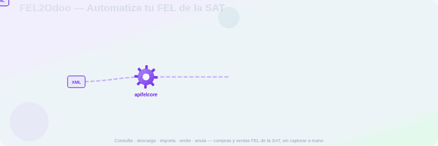
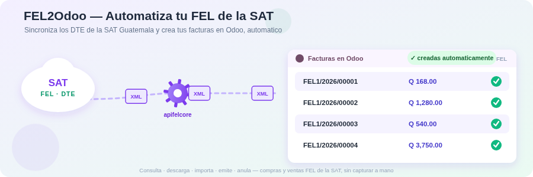

Descarga, importa, contabiliza y emite facturas electronicas de la SAT sin salir de Odoo. Compras y ventas, por API o carga masiva de XML.
En Guatemala cada compra y cada venta ya es un DTE FEL certificado por la SAT. FEL2Odoo trae esos documentos a Odoo automaticamente — con sus impuestos, frases SAT, contactos y cuentas — y ademas te deja emitir tus propias facturas de venta ante la SAT, todo desde el mismo Odoo y sin subir nada a sitios externos.
Conecta con el proveedor intermediario (apifelcore.com), consulta por periodos y descarga solo los DTE nuevos. Crea las facturas y, si quieres, las confirma solo.
¿Tienes los XML a mano? Subelos todos de una vez. Se asignan impuestos por linea segun el catalogo de la SAT, sin capturar nada a mano.
Certifica facturas de venta directamente desde Odoo. Se configura por diario (establecimiento, manual o automatica al confirmar) y esta restringida a gestores contables.
Anula ante la SAT una factura emitida con el flujo estandar de Odoo (restablecer a borrador y Cancelar). Si no escribes motivo, usa uno generico.
Cada factura queda con su XML original adjunto. Opcionalmente descarga tambien el PDF oficial del DTE y lo adjunta al chatter, visible y descargable.
Mapea IVA, IDP, Tasa Municipal y demas por linea, y aplica retenciones ISR/IVA segun las frases del catalogo oficial de la SAT (Tipo/Escenario).
Opcional: sugiere la cuenta contable por descripcion e historial del proveedor, con asistencia por IA opcional (modulo aparte). Desactivado por defecto.
Sincronizacion programada (6h/12h/diaria/semanal/mensual), control de cuota mensual con corte automatico, y una bitacora con diagnostico por cada corrida.
El plan del proveedor intermediario (apifelcore.com) se contrata aparte y NO esta incluido en el precio de este modulo.
En FEL2Odoo > Conexiones, ingresa tus credenciales del proveedor y el NIT del emisor.
Pulsa Probar. La sincronizacion automatica solo se habilita cuando la conexion queda verificada.
¿Vas a emitir? En el diario de ventas activa FEL2Odoo y define establecimiento y si se certifica al confirmar.
Ejecuta la sincronizacion (o deja el cron). Se crean las facturas con sus impuestos, XML y (opcional) PDF.
Los secretos nunca se muestran ni se registran en la bitacora.
Emision y anulacion restringidas a gestores contables.
Proteccion contra XXE: no se procesan datos externos como codigo.
Arquitectura limpia, facil de migrar a futuras versiones.
Aprovecha el lanzamiento: una sola compra, uso de por vida en tu instancia.
Compras y ventas, importacion y emision, XML y PDF — todo dentro de Odoo 19 (Community y Enterprise). Hecho en Guatemala, para la contabilidad guatemalteca.
FEL2ODOO — Automate FEL GT — por KTX APPS — NIT 93823509
Guatemala FEL • Odoo 19 • SAT • apifelcore.com
Contenido generado con ayuda de IA, con estricta planificacion y gestion de KTX.